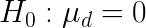
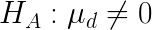
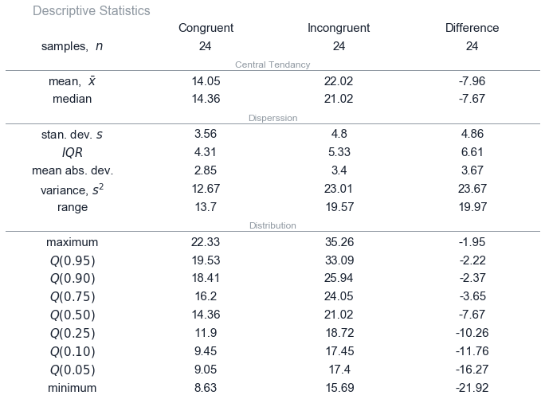
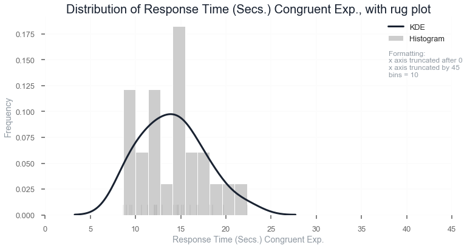
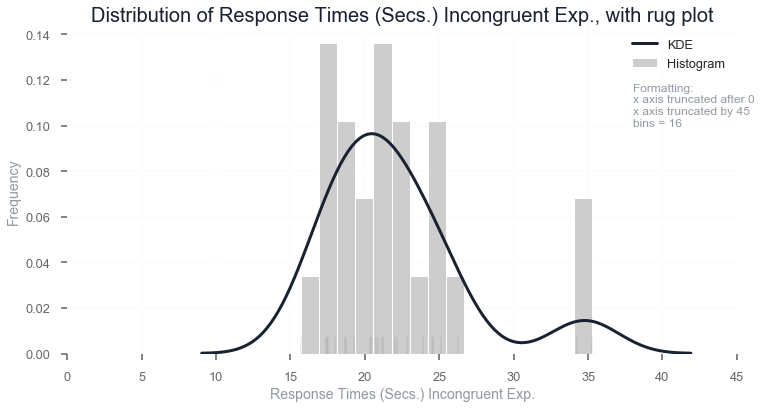
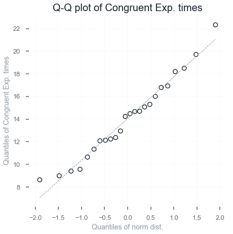
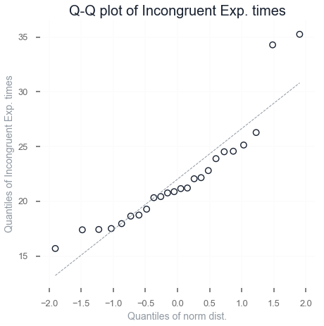
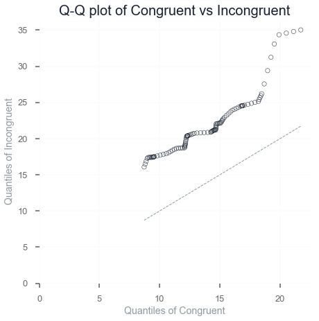

Welcome to Stroop Effect’s documentation!¶
Stroop Effect¶
Adam McCarthy
A statistical analysis of a classic experiment
Background Information¶
In a Stroop task, participants are presented with a list of words, with each word displayed in a color of ink. The participant’s task is to say out loud the color of the ink in which the word is printed. The task has two conditions: a congruent words condition, and an incongruent words condition. In the congruent words condition, the words being displayed are color words whose names match the colors in which they are printed: for example RED (is red color), BLUE (is blue color). In the incongruent words condition, the words displayed are color words whose names do not match the colors in which they are printed: for example PURPLE (is red color), ORANGE (is blue color). In each case, we measure the time it takes to name the ink colors in equally-sized lists. Each participant will go through and record a time from each condition.
Try it out here
1. What our the variables¶
The experiment has a within subject design, where each subject is given two tests.
This is repeated using 24 participants.
This gives paired data, congruent response time vs. incogruent response time.
The dependent variable is the time a participant takes to respond. This type of data is a temporal ratio.
2. Hypotheses for this task¶
The results have come from a repeated measures design so the hypothesis test will compare the difference between the two sets of results.
Null hypothesis:
{kind=link}
Alternative hypothesis:
{kind=link}
Where mean d is the mean difference between the paired data.
The null hypothesis is that there will be no difference in the time taken to read through the list when the data is presented in incongruent or congruent form.
The alternative hypothesis is that if the data is presented in incongruent form the time taken to read through the list will be different than the time taken when the data is presented in congruent form.
As test sample will involve 24 participants, this will not be a measure of the total population.
A two tailed dependent sample t-test will be conducted using α = 0.05.
A two tailed test is selected to test if the mean is not equal to 0 in either direction.
Limitations¶
The sample size of 24 participants may not be representative of the population.
Another limitation is we have no information about the source of the data. What was the sampling method of participants for the experiment, will they give a random sample representative of the population?
We have to assume this an experimental design. No other information has been provided.
There could be some carry-over effects. The second measurement could be affected by the first treatment. Particpants could be initially disorientated with the format of the test. By being more familiar with the second test this may increase response time.
3. Descriptive statistics regarding the dataset¶
{kind=link}
There are no times that a participants congruent test results are a shorter response time than their incongruent response time.
4. Visualizations of the distribution of the sample data¶
A histogram can display the distribution of results from each experiment. This is combined with a faint rug plot (showing small vertical ticks along the x-axis) to highlight where the individual values occur along the x-axis and kernel density estimation to highlight the distribution of values.
Both figures are plotted using the same x-axis.
 {kind=link}
{kind=link}
The first thing that stands out is the genereal difference in response time between Congruent and Incongruent. This represents visually the mean difference of 7.9 seconds.
Compared to the descriptive statistics this helps highlight the distribution of the values more clearly. Both distributions have clusters and groups of values within a range of responses. Neither distribution show a classic normal distribution.
Q-Q(Quantile Quantile) plots typically need around 1000 samples but still form a way to compare samples to an ideal distribution. The normal distribution is selected here.
 {kind=link}
{kind=link}
These plots demonstrate that neither distribution appears normally distributed.
Both suggest there are some seperate clusters occuring within the distribution.
The congruent data has light tails and a skew to the left.
The incogruent data set has heavy tails and a skew to the right.
These observations should be taken in the context that the sample size is only 24. A larger sample size could change the representation of these distributions.
5. Inferntial statistics and results¶
Results¶
t(23) = -8.02 p ≈ 0, two-tailed
Where p = 4e-08
Confidence interval of the mean difference, 95% CI = (5.91 to 10.02)
d calculated using Cohen´s d
d = -1.64
R squared coefficient
r² = .74
Based on a critical t statistic of ± 2.069
Conclusion¶
The null hypothesis is rejected.
The difference of the mean between the two samples is not 0, nor does 0 lie within the confidence intervals.
The two tailed t-test suggests this is a very unlikely occurence with a probability approaching 0.
A Q-Q plot of the two variables gives an overview of how the two distributions are related.
{kind=link}
This could be improved by adding a 95% confidence interval to give a visual representation about the hypothesis test.
The figure alone helps show the magnitude of the difference between the two samples.
This suggests there is causal evidence that response time varies between congruent and incongruent displays of words.
Resources used¶
See Jupyter Notebook for calculations and figures.
The figures and tables code is stored in two seperate python files within the ipython_notebook folder.
Problem posed by Udacity